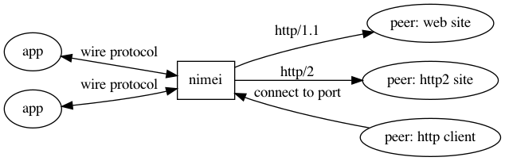

NIMEI proxy, the design and roadmap
Created at: 2020-06-20 Index
Idea of NIMEI
The problem
There are tons of programming languages in the world. Once created, a language has to be able to communicate via internet for real world cases, so it has to parse network protocols, either using libraries in C/C++ or developing protocol parsers in itself along. Parsing procedures tend to be hard for modern protocols such as HTTP2, RSocket and QUIC. Programming language designers are usually not networking experts, they also has many stuffs to handle during the Genesis. Lack of appropriate parsers may eventually undermine their adoption in the developers' zoo, since most developers tend to accept out-of-box solutions.
Even if a language has a good protocol support, different network protocols and libraries expose symantics gaps and coding conventions, Developers have to follow those conventions by reading documents and examples, which leads to non-standard codes and prolonged development sprint.
The complexity of protocol adoptions is the num of programming languages multiplies the num of network protocols, such natural selection may kill many innovative languages. Using NIMEI reduced the complexity to the num of programming languages plus the num of network protocols.
The NIMEI solution
NIMEI proxy provides a new paradigm of possible solutions, let's have a proxy between application and network peer, it handles traditional client-to-server and server-to-client connections on one side, and translates packets of them to/from protocolbuf messages and talks to applications on the other side.
Protobuf messages are strongly typed, compact, easy to extend and easy to map to language data structures. The NIMEI proxy, as a middle man or say translator, talks to application in protobuf and talks to external connections in their specific protocols, applications in language only have to implement protobuf message decoding/encoding.
The arch diagram

Examples
For simplicity, the literal 'A' stands for Application, 'N' stands for NIMEI proxy and 'P' stands for connect peers in the outside world, P is the client if A is a server and vice versa.
Connect a HTTP server, A -> N -> P
# A -> N # # c is a TCP connection from A to N while s is a stream within the # connection # # connect to http://some.website.com:80, protocol is HTTP c -> Dail("http1.1", "some.website.com", 80) # connected, peer is the ip of some.website.com s :<- stream.New(peer="1.23.45.67:80") # NIMEI turns the packet into "GET / HTTP/1.1\r\n" s -> http.RequestLine(method="GET", path="/") # NIMEI turns the packet into "Host: some.website.com\r\n" s -> http.Header(key="Host", value="some.website.com") # NIMEI turns the packet into "\r\n\r\n" s -> http.EndHeader()
Listen as a webserver, A -> N; P -> N -> A
# A -> N require NIMEI to open a proxy and redirect all traffic to # this connection the listener port will always be hold until # connections is broken or A calls Close() method c -> Listen("http1.1", "0.0.0.0", 8080) # N -> A # A new connection is accepted s :<- stream.New(peer="192.168.1.237:28417") # NIMEI turns the packet into "GET /?a=b HTTP/1.1\r\n" s <- http.RequestLine(method="GET", path="/?a=b") # NIMEI turns the packet into "Host: some.website.com\r\n" s <- http.Header(key="Host", value="some.website.com") # NIMEI turns the packet into "\r\n\r\n" s <- http.EndHeader() # The original line is "HTTP/1.1 200 OK\r\n" s -> http.StatusLine(code=200, version="HTTP/1.1") s -> http.Header(key="Content-Length", value="5") s -> http.EndHeader() s -> http.Data(data="hello") s -> http.Header(key="User-Agent", value="Bad") # bad protocol error # close the stream s -> stream.Close()
Design considerations
Why use nim?
- Nim has very small footprint and easy to program
- Nim compiles to C language, Android and iOS and even Flutter all support interaction with C language, so nim can be embeded as a library to skip the network round trip. In this case traffics between Application and NIMEI proxy are made as simple as function calls and callbacks.
- Nim is an interesting language with advanced syntax such as macros. The expressiveness makes it is comparable to modern languages such as Rust, Go, Kotlin and Swift.
- The Nim ecosystem lacks library support, to write code in it brings relatively more sense of accomplishment.
Transport layer implementation
The traffic between Application and NIMEI can be implemented above the following stacks.
- Unix domain socket, effective but limited to local machine
- Protobuf over Websocket, both technologies are well adopted and can be moved to browsers.
- gRPC, natively play with protobuf, but there should be envolop messages, can run within web using gRPC-Web.
- RSocket, RSocket has backpressure and reactive streaming support, but language support is not rich.
- In process function call and callbacks, this mode is suitable for mobile interactions and localhost connectivity.
Wire protocol over TCP
- connection, the application issues a connection to NIMEI to let NIMEI talk to external peers and also exchange data with NIMEI.
- session, the state of conversation maintained between application and NIMEI, usually a session has one connection, but it is also possible to have multiple connections or even span connections.
- client id, client id is a string or number generated by aplication side and is unique to the application side during the connection/session.
- stream id, stream id is a string or number genreated by NIMEI side and is unique to NIMEI side during the connection/session. The stream is a map of a protocol's stream between NIMEEI and a peer, for those protocols that aren't aware of the stream concept the stream maps to a network connection. For example, HTTP/2 and RSocket has streams, so their streams map to wire protocol's stream naturally; HTTP/1.1 doesn't have stream, hense an HTTP/1.1 connection maps to one stream within wire protocol's connection.
The A/N protocol is a hybrid protocol made up of text lines and binary payloads which leverages performance and readibility.
# A -> N # The first message # VERSION <ver>\r\n VERSION 1.0 # A -> N # LISTEN <client id> <protocol> <listen address> <port> <*args>\r\n LISTEN 1 http1.1 0.0.0.0 8000 reuseaddr # A -> N # DAIL <client id> <protocol> <address> <port> <*args>\r\n DAIL 2 http1.1 some.website.com 80 tls tls.cert=/etc/cert/cert.pem # A <- N # ERR <client id> <code> <msg>\r\n ERR 2 417 connect failed # A <- N # CONNECTED <client id> <stream id> <peer address>\r\n CONNECTED 2 1001 1.23.45.68:80 # A <- N # PING\r\n PING # A -> N # PONG\r\n PONG # A -> N # DATA <stream id> <message kind> *<message length>\r\n<message payload>\r\n DATA 1001 http.RequestLine *203 <payload of 203 bytes> # A <- N, Got notified that the stream is closed by remote peer # CLOSED <stream id>\r\n CLOSED 1001 # A -> N, Actively close the stream # CLOSE <stream id>\r\n CLOSE 1001
Transport security layer
NIMEI proxy handles TLS traffic on behalf of applications in order to simplify their job. Two things have to be handled.
- At the first step, NIMEI can have only one global TLS cert/key file settings to simplify the whole things up.
- Application can specify the TLS certs and pkeys using arguments.
- Application can upload their own certs and pkeys to NIMEI proxy and update them later.
API, Monitor and circult-breaker
- NIMEI will export prometheus metrics, including both CPU/Memory/IO related messages and connections and other metrics.
- The circult-break and backpressure mechanism and API to control traffic throughput.
- There will be a user friendly dashboard.
Roadmap
- Build simple HTTP server using nim to learn coding in nim, this is the current job.
- Protobuf file parser and code generator in nim, this can be a dedicated project to write a protoc plugin, using Python is simple enough.
- Build as shared library, calls and callbacks.
- Implement wire protocol over normal TCP.
- Implement wire protocol over Websocket, run the project in browser.
- HTTP2 protocol parser in nim, server and client.
- Implement wire protocol over gRPC.
- TLS support and cert upload.
The future
- Can NIMEI model be the message passing core of microkernel operating system?
- Can NIMEI model be used by tech stacks like k8s or serverless or faas?